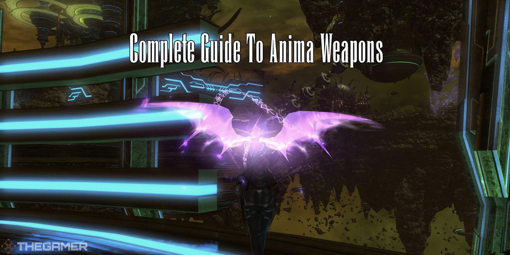

(
(
How To Get The Anima Weapons in Final Fantasy XIV?
Anima Weapons, Heavensward's version of "Relic Weapons." They are outdated, but they are still considered a valuable cosmetic must-have. However, you will have to complete a list of Quests to obtain them. In this guide, I will show you what you have to do to get Anima Weapons in FFXIV.

Requirements for the Anima Weapons
Players need to reach level 60 and complete all Main Scenario Quests entitled "Heavensward."
How to get the Anima Weapon in FFXIV?
Here are all the Anima weapon steps and the fastest way to complete each one:
1. Complete The Quest 'An Unexpected Proposal'
Your Anima Weapon journey will begin with the quest An Unexpected Proposal.
1). You could get this quest from Rowena Dravania, positioned in Idyllshire (x:5.7, y:5.5).
2). Then, go to the Alpha Quadrant in Azys Lla (x:7, y:11) and speak to Ardashir.
2. Complete The Quest 'Soul Without Life'
Ardashir then gives you the Soul Without Life quest. This follow-up quest will task you with gathering an Umbral and Astral Nodule.
1). Go to Mor Dhona.
2). Speak with Syndony.
3). Gather the Luminous Crystals for each Element.
4). Speak with Syndony and convert the Crystals to Astral Nodule and Umbral Nodule.
5). Return to Ardashir in Azys Lla (x7, y11).
6). Rewards: 1447 Final Fantasy XIV Gil, Animated Weapons.
3. Complete The Quest 'Toughening Up'
Speak to Ardashir, who gives you a new quest, Toughening Up. This quest will require you to complete ten dungeons with your Animated Weapon equipped.
1). Conquer Snowcloak.
2). Conquer Sastasha.
3). Conquer The Sunken Temple of Qarn.
4). Speak to Ardashir in Southern Thanalan.
5). Conquer Keeper of the Lake.
6). Conquer Wanderer's Palace.
7). Conquer Amdapor Keep.
8). Speak to Ardashir in South Shroud.
9). Conquer Dusk Vigil.
10). Conquer Sohm Al.
11). Conquer The Aery.
12). Conquer The Vault.
13). After you complete the tenth dungeon, you will have to return to the Alpha Quadrant and speak to him again.
14). Rewards: 868 Gil, Awoken Weapons.
4. Complete 'Coming into Its Own'
Speak to Ardashir, who gives you a new quest, Coming into Its Own. For this quest, you will be required to collect four items.
1). Go to Mor Dhona and speak to Cristiana.
2). Trade Tokens to Cristiana to get the Anima Weapons Materials.
3). Enchanted Rubber = 10x Unidentifiable Bone + 4x Adamantite Francesca.
4). Fast-drying Carboncoat = 10x Unidentifiable Shell + 4x Titanium Alloy Mirror.
5). Divine Water = 10x Unidentifiable Ore + 4x Dispelling Arrow.
6). Fast-acting Allagan Catalyst = 10x Unidentifiable Seeds + 4x Kingcake.
7). After you've traded each material, return to the Alpha Quadrant in Azys Lla.
8). Speak with Gerolt (x7, y11).
9). Give him the 4 Anima Weapons Material and the Awoken Weapon.
10). Rewards: 1512 Gil, Anima Weapon.
5. Complete 'Finding Your Voice'
Next up, you should complete the Finding Your Voice quest. For this quest, you need to gather five Aether Oils which can be done in two ways:
1). Complete the weekly quest The Gift of the Archmagus for one Aether Oil.
2). Buy 350 Tomestones of Poetics to Hismena in Idyllshire(loc).
Rewards: 518 Gil, Hyperconductive Anima Weapon, Access to replica Awoken and Anima Weapons from the Restoration Node.
6. Complete 'A Dream Fulfilled'
1). Go to Idyllshire to meet with Ulan, who will ask you to gather Umbrite and Crystal Sand.
2). Obtain Crystal Sand by trading with Ulan for various items.
3). Obtain Umbrite by purchasing 75 Tomestones of Poetics from Hismena in Idyllshire (x5.8, y5.1).
4). After obtaining both, you will combine them into Treated Crystal Sand by talking to Ulan.
5). Allocate Treated Crystal Sand into your weapon to increase its stats.
6). After you have allocated 240 points, you will finish this step.
7). Rewards: 488 Gil, Reconditioned Anima Weapon.
7. Complete 'Future Proof'
For this quest, you will need to gather 50 singing clusters. Luckily, there are three options for collecting this item that can be completed in conjunction.
1). Complete the weekly quest 'Seeking Inspiration' for 18 singing clusters.
2). Complete the daily quest 'Cut From a Different Cloth' for one singing cluster.
3). Purchase for 40 Tomestones of Poetics from Hismena in Idyllshire (x5.8, y5.3).
4). Rewards: Sharpened Anima Weapon.
8. Complete 'Born Again Anima'
1). Ardashir will ask you to complete three dungeons:
• Sohm Al (Hard).
• The Great Gubal Library (Hard).
• The Lost City of Amdapor (Hard).
2). After completing the dungeons, you will need to speak to two non-player characters and complete their sub-quests.
• Speak to the Processing Node and complete the quest 'Some Assembly Required.'
• Speak to the Verification Node and gather Aetheric Density for your weapon.
3). Rewards: 615 Gil, Complete Anima Weapon.
9. Complete 'Body And Soul'
1). Go to Idyllshire to speak with Rowena.
2). Then, head back to Ardashir.
3). Rewards: 1559 Gil, Anima minion.
10. Complete 'Words of Wisdom'
1). You need to speak with Rowena again.
2). Talk to Ardashir again.
3). Rewards: 1526 Gil
11. Complete 'Best Friends Forever'
This quest is the final step in the Anima Weapon questline.
1). You need to complete every level 50 to level 60 hard trial that must be completed in the following order:
• Bowl of Embers (Hard)
• Howling Eye (Hard)
• The Naval (Hard)
• Thornmarch (Hard)
• Whorleater (Hard)
• Striking Tree (Hard)
• Akh Afah Amphitheatre (Hard)
• Thok ast Thok (Hard)
• The Limitless Blue (Hard)
• Containment Bay S1T7
• Containment Bay P1T6
• Containment Bay Z1T9
2). After completing these trials, you should return to and speak with Ardashir.
3). He will ask you to deliver an Archaic Enchanted Ink, which you can buy for 500 tomestones of Poetics from Hismena in Idyllshire (x5.8, y5.3).
4). When you deliver the ink to Ardashir, their Anima Weapon will be complete.
5). Rewards: Lux Anima Weapon.
The Anima Weapon quest chain is not an easy one, and you must be willing to invest lots of materials and time into crafting these weapons. You can also check BUYFFXIV4GIL.COM to view other weapon guides, like how to get Eurekan weapons.